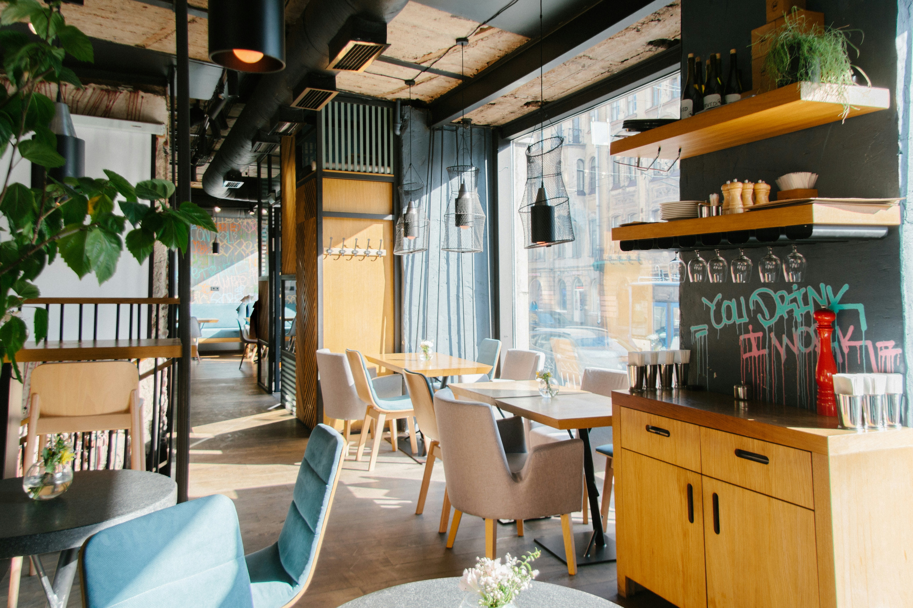

Smooth Sips & Cozy Vibes
Welcome to Steam & Snout's Cafe! Whether you're looking for a cozy cafe to relax, a nice study spot, or a quick bite, Steam & Snout's has got you covered! We offer many things such as human & animal-friendly foods and beverages, private study rooms, cafe wifi, charging stations for all tech - including steam-powered machines, and a cozy lounge area so you can relax and recharge along with your steam-powered tech! Steam & Snout's prides itself on being an all-inclusive place to focus, study, and relax in this busy bustling city.

About Us
Steam & Snout's Cafe was born from an idea made by two college students, Rosalind Susanna Steam & Marcellus Lewis Snout. After struggling to find quiet study spots and places with animal-friendly foods in the city of Sun Rest, Rosalind and Marcellus decided, "If no one's gonna create a space for us, we'll make our own!," and created a place college students of all species can enjoy to hang out, study, or just relax with friends!